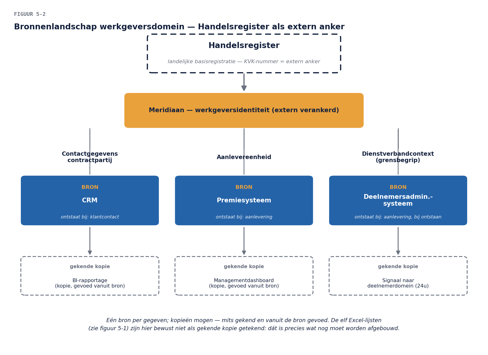

Business & Enterprise Architectuur — Niveau 1
Deel 5 · Slidedeck — Fase C: dataarchitectuur
(Platte markdown; één kop per slide, sprekersnotities cursief. Figuren als placeholder — opmaak volgt in de buildfase.)
Slide 1 — Deel 5 · Fase C
Dataarchitectuur: structuur, bron, eigenaar
Slide 2 — Opdracht 0 (10 min, tweetallen)
Peer feedback visie-hoofdstuk 2 — werkboek p. 1
- “Kan de COO hiermee het OR-gesprek in?”
- Markeer binnengeslopen systeemtaal — vandaag leer je waar die wél hoort
Slide 3 — Vandaag sluiten we
B7 — definitief. Betekenis was deel 4; vandaag: structuur, bron, eigenaar, stromen. En: B3 gaat half open — deel 6 maakt hem af.
Slide 4 — De vraag bij je bureau
Het hoofd Premie-administratie:
“Mooi stelsel. Maar in wélk systeem staat straks de waarheid? Nu staat de werkgever in vier systemen en elf Excel-lijsten — en ze spreken elkaar tegen.”

Slide 5 — En de geparkeerde vraag van deel 4
“Wie is eigenaar van het begrippenkader?”
Beide vragen op de flap. Beide worden vandaag ingelost.
Slide 6 — Vandaag
- Drie modelniveaus — en waar de architect stopt
- Gegevensdomeinen
- Bronregistratie: waar de waarheid woont
- Eigenaarschap
- Kwaliteitsregels
- De matrix die B7 sluit
Slide 7 — Drie niveaus
- Conceptueel — begrippen & relaties, businesstaal → de architect
- Logisch — attributen & sleutels → kijkt de architect mee
- Fysiek — tabellen & kolommen → blijft de architect wég
Historie is een conceptuele eigenschap: “moet Meridiaan weten hoe het wás?” — voor een pensioenuitvoerder: bestaansvoorwaarde.
Slide 8 — Opdracht 1 (30 min, tweetallen)
Van stelsel naar conceptueel model — werkboek p. 1
- Incl. De Boer-toets ronde 2: de fusie, zónder mevrouw Jansen kwijt te raken
Slide 9 — De Boer, ronde 2
- Fout 1: Zuid “hernoemen” naar West → historie vernietigd
- Fout 2: opvolgingsrelatie vergeten → rechten zweven
- Goed: beëindiging + opvolgingsrelatie per fusiedatum
Slide 10 — Gegevensdomeinen
Betekenisclusters — de eenheid van eigenaarschap en beheer
- werkgevers · deelnemer/dienstverband · aanspraken · financieel · polis/product · vermogen
- Niet langs systemen of afdelingen: die indelingen sterven met hun naamgever
Slide 11 — Grensbegrippen
Het dienstverband ligt op de grens van twee domeinen. Grensbegrippen zijn B7-kraamkamers — benoem ze en maak de afspraak expliciet.
Slide 12 — Opdracht 2 (20 min, drietallen)
Domeinen en de grens — werkboek p. 2
- De grensafspraak: waar woont het, wat mag de ander, hoe wordt de ander gesignaleerd?
Slide 13 — Bronregistratie: drie spelregels
- Eén bron per gegeven — niet per systeem
- Kopieën mogen — mits gekend en gevoed
- De bron volgt het ontstaan
Slide 14 — De elf Excel-lijsten
Niet fout omdat het kopieën zijn — fout omdat ze onbekend en onbeheerd zijn. Schaduwadministraties in hun natuurlijke habitat (deel 4!).
Slide 15 — Extern anker eerst
- Personen → BRP · Bedrijven → Handelsregister (KVK-nummer)
- Meridiaan registreert niet “zelf” — zij refereert en voegt alleen de uitvoeringsrelatie toe
- Externe identiteit = halve B7 opgelost
Slide 16 — Het bronnenlandschap

Slide 17 — Opdracht 3 (30 min, drietallen)
De bronnenkaart — werkboek p. 2
- Incl. rollenspel: de beheerder van de grootste Excel-lijst (8 min)
Slide 18 — De geparkeerde vraag, beantwoord
Elk domein krijgt een data-eigenaar — altijd business, nooit “IT”
- Eigenaarschap = betekenis · kwaliteit · gebruik — drie businessvragen
- IT beheert systémen: dat is applicatie-eigenaarschap (deel 6)
Slide 19 — De rolverdeling
- Eigenaar — besluit, is aanspreekbaar (lijnmanager van het domein)
- Steward — het dagelijkse werk: definities, meting, uitzonderingen
- Architect — samenhang over domeinen: stelsel, grenzen, bronnenkaart
De senior die nu belrondes doet = geboren steward. Dít is het “andere werk voor wie blijft” (deel 4).
Slide 20 — Eigenaarschap zonder mandaat is theater
Wie eigenaar is, krijgt ook de knoppen. → het beleggingsbesluit hoort in de governance (deel 9)
Slide 21 — Kwaliteit: van verzuchting naar regel
- ✗ “De datakwaliteit moet omhoog”
- ✓ concern → toetsbare regel + dimensie + meetlat + eigenaar
- juistheid · volledigheid · actualiteit · consistentie · uniciteit
Slide 22 — Opdracht 4 (25 min, tweetallen)
Kwaliteitsregels uit jullie deel 3-concerns — werkboek p. 3
- Zoek de architectuurkeuze in vermomming
Slide 23 — “Validatie bij ontvangst”
Eén kwaliteitsregel, drie beslissingen:
- het kanaal wordt een valideervoorziening (applicatie)
- regels centraal beheerd door stewards (organisatie)
- de aanleveraar krijgt de fout, niet de administratie (proces)
Slide 24 — Opdracht 5 (25 min, drietallen)
De matrix die B7 sluit — entiteit × applicatie, C/R/U — werkboek p. 3
- “?” is een volwaardig antwoord — dát was B3
Slide 25 — B7: gesloten
betekenis (4) → structuur → bron → eigenaar → stromen (5) ✓ B3: half — “welke systemen raakt het?” is per gegeven afleesbaar; deel 6 maakt het af
Slide 26 — En de FG kijkt mee
De matrix toont in één oogopslag: wie doet wat met welke persoonsgegevens
- Grondslag, toegang, kopieën — háár vragen, jouw artifact
- Views voor stakeholders — de cirkel van deel 1 is rond
Slide 27 — Huiswerk
Opdracht 6: visie-hoofdstuk 3 (max. 2 A4) — mét het B7-slot
- Feedbackvraag deel 6: “beantwoordt dit ‘in welk systeem staat de waarheid?’ — zonder jargon?”
- Let op: “opgelost” zonder onderhoudsclausule = de volgende bevinding in wording
Slide 28 — Volgende keer
Deel 6: fase C-applicatie — het landschap in kaart
- Applicaties, koppelingen, dubbelingen · B3 en B12 gaan eraan
- Het uitfaseringsbesluit oude portaal komt op tafel
- Neem de matrices van vandaag mee